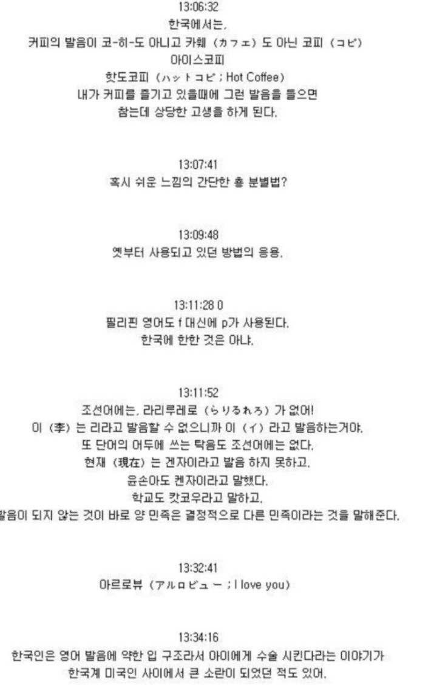
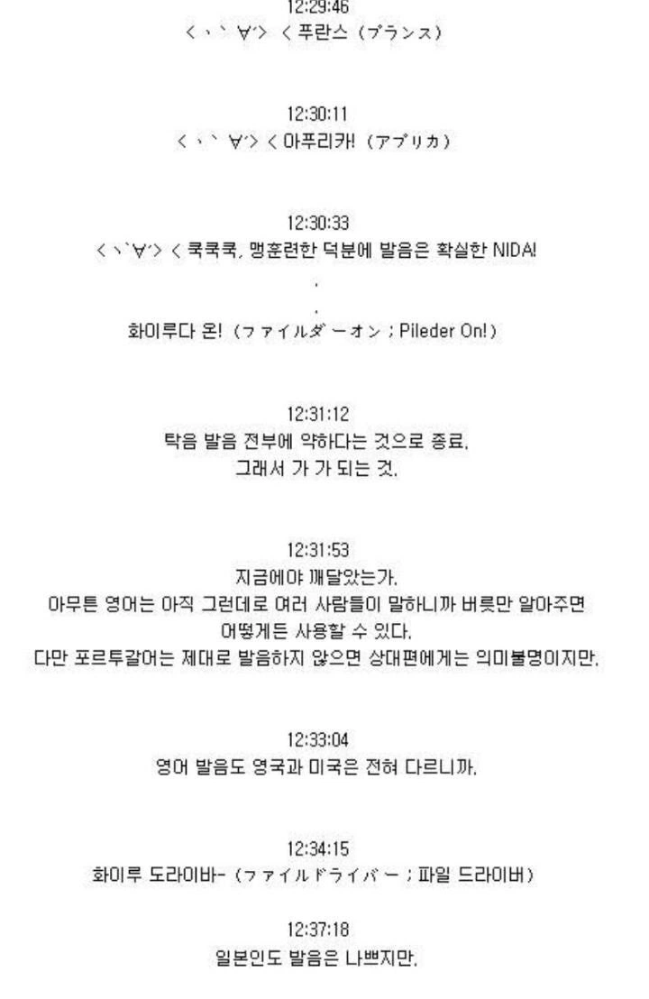

'영어발음'
마구도나루도의 나라가 시끄러운wwww


'영어발음'
마구도나루도의 나라가 시끄러운wwww
F발음이 ㅍ이랑 ㅎ 중간발음이라 어디를 더 중요시 하느냐에 따라서 완전히 달라짐 ㅋㅋㅋ
쟈 와루도
호토 쟈 포쿠 what the fuck
후쿠? 훠쿠?
한국이나 일본이나 영어권도아니고ㅋㅋㅋㅋ 영어 잘 하는 국가에 비해서 형편없는데 두 국가가 영어 발음으로 서로 까는거 보고있으면 코믹하긴함 ㅋㅋㅋㅋ
커피 코히 둘 다 못 알아들어..
마구도나르도 맥도날드 둘 다 못 알아들어…
외래어법도 2차대전 우호국거를 그대로 쓰는놈들이 영어를 논하고있어ㅋㅋㅋ 왁찐! 우이루스!
마꾸도나루도 비꾸마꾸 셋또또 쿠오타아파운다아바아가아또 코오라아 구다사이
그래서 "으-롸이스"를 못쓰게 했군
저게 호카손자의 나라입니까
마자 화자 부라자 ㅋㅋ
1부터10까지 영어로 못 알아듣는 유일한 선진국인 나라
우리나라도 영어발음이 좋은건 아닌데 쟤들 보단 낫지
한국식 발음을 더 알아듣긴 하는데 한 6:4정도일걸? 일본식은 다른쪽으로 유리한게 장음처리임.
하버드를 하버드라고 하면 100중90은 못알아들을건데 이게 단순히 V발음 R발음 때문이 아니고 장음 땜에 못알아들음 차라리 [하아벋]이라고 하면 알아듣겠지 V R발음 없어도..근데 일본말엔 장음표기가 따로있잖아. 저새기들이 한국인 커피발음이 이상하다고 하는거도 우리는 발음을 초성위주로 하고 점마들은 우리 커피발음에 장음이 없으니 틀린발음이라고 주장하는거고
영국 가봐라 걍 콩글리시는 다 알아들음ㅋㅋ
ㅇㅇ 나도 영국애들포함 말해본 경험으로 말하는겨 띄엄띄엄 소통하다가 가끔 존나게 못알아듣는 경우 초성에 신경쓰는거보다 (r-l v-b th-d z-j) 장음포함 강세 흉내내니깐 알아듣던데
아일랜드 워홀의 경험상 걍 어설프게 하는거보다 한국영어 하듯이 하면 알아들음
영국에 인도계 사람들이 많아서 한국영어 오히려 듣기좋다 하던데ㅋㅋㅋ
관동대지진 당시 일본인 자경단과 군경은 조선인들을 학살해야 하는데 외모로 구분하기 어려워 '주고엔 고짓센(十五円五十銭, 15엔 50전)'을 발음하게 해서 구분했다.
마쟈 화쟈 브라쟈
호카손쟈
ㅋㅋㅋㅋㅋㅋㅋㅋ 댓들이 더 웃김
루휘쿤
호또호또~
호카손쟈의 나라 ㅋㅋ
이런 이슈 뜰때마다 구강구조적으로 ザ행의 z발음이 더 th발음에 가깝고 어쩌고 저쩌고 하는 원종이들 뜨던데
암만 들어도 ザ는 the가 될 수 없어..
다만 일본어 외래어는 유래가 다양해서 위에서 많이 나오는 コーヒー(코히)같은 경우에는 그 어원이 영어 coffee가 아니라 네덜란드어 koffie에서 온거긴 함
네덜란드어를 몰라서 저게 어떻게 발음되는진 나두 몰루
뻔데기발음을 안쓴다는건 한일 공통인데 [쟈]보다는 [더]가 더 가깝긴한듯
근디 우리는 발음을 할때도 알아들을때도 초성이 중요한데 이게 영어말하기 할때 악센트에서 떡벽느끼는 이유기도 함 coke를 코우크로 읽는게 자동으로 안되서
The Trump hotel room has a computer and a digital clock (트럼프 호텔 방에는 컴퓨터와 디지털시계가 있다.)
- 자 도람프 호테루 루무 하즈 아 코무퓨타 안도 아 디지타루 쿠롯쿠.
뭐라는거여?
중국의 한국인 수박 같은 건가보네 ㅋㅋㅋㅋㅋㅋㅋ
나마 비루 구다사이 ...ㅋ
넷우익은 정병의 영역이제 ㅋㅋㅋ
처음 일본가서 까페 도전하는데 입구부터 열심히 준비해서 아... 브락꾸 코히 아이스데 오네가이시마스! 했더니 점원이 아 아이스아메리카노요? 이래서 얼굴 개뜨거워짐...
다른건 모르겠는데 이건 진짜 긁힘 ㅋㅋㅋㅋ
해루쭈 해루쭈 ㅡ 도와달란거엿음
아루코루 아루코루 ㅡ 알코올이었음
영어권에서 만난 사이라 다들 영어 적당히는 하는데
얘넨 걍 대화가 불가능한 정도더라
일본놈들이 영어발음으로 한국 욕하면 화난다기 보다는 좀 애처로울 지경이다
호카손쟈 화자마자부라자
The 는 더보다 자에 가깝다는 원종이 언제 출동하냐
일본가서 커피 못알아들어서 충격먹음
코히가 진짜 그발음인줄 알더라.. 저런거존나많음